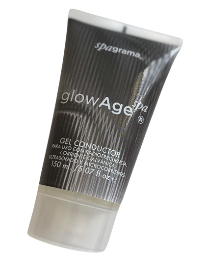
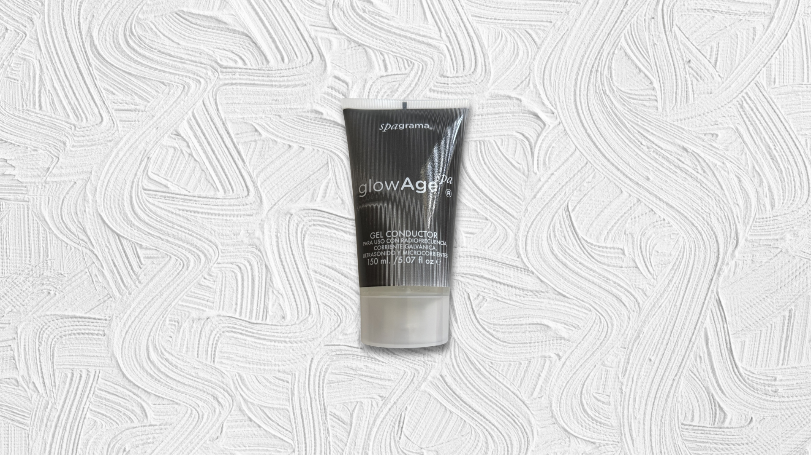
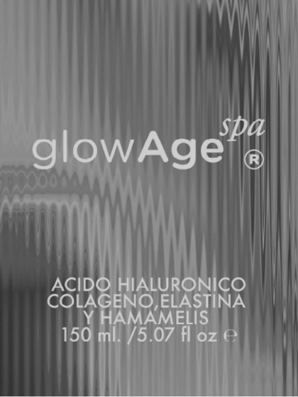

GlowAge es un gel conductor de SPAGRAMA diseñado para utilizarse con dispositivos coadyuvantes al cuidado facial en el hogar. Su textura favorece una aplicación uniforme y una experiencia más cómoda durante el tratamiento, mientras acompaña la piel con humectación, confort y una sensorialidad refinada.
Gel conductor premium para aparatología facial en casa
Tecnología spa para tu piel, en casa.
GlowAge es el gel conductor premium de SPAGRAMA, creado para llevar la experiencia del spa a la comodidad de tu hogar. Acompaña tus rutinas con dispositivos faciales favoreciendo el deslizamiento, la conducción y una sensación de cuidado más cómoda, sofisticada y sensorial.
- Textura
- Ligera, uniforme y envolvente
- Compatibilidad
- Galvánica, radiofrecuencia, ultrasonido y microcorrientes
- Activos
- Ácido hialurónico, colágeno, elastina y hamamelis

SPAGRAMA
Los beneficios del spa, en la comodidad de tu hogar.
SPAGRAMA nace de una idea clara: llevar los beneficios de un spa directamente a la comodidad de tu hogar. Transformamos la rutina diaria de cuidado personal en una experiencia de lujo accesible, pensada para cuidar, embellecer y revitalizar la apariencia de la piel.
Cada fórmula está diseñada para convertir el uso cotidiano en un ritual más pausado, sofisticado y disfrutable, donde la tecnología cosmética y el bienestar conviven con naturalidad.
Qué es GlowAge
Un gel conductor premium para elevar la rutina facial en casa.
Beneficios principales
Tecnología, confort y cuidado en equilibrio.
Favorece la conducción
Ayuda a mantener una transmisión continua durante el tratamiento con el dispositivo.
Deslizamiento uniforme
Permite que el dispositivo se desplace con mayor suavidad sobre la piel.
Humectación y confort
Acompaña la rutina con una sensación de piel atendida, cómoda y flexible.
Sensación calmante
La presencia de hamamelis se integra a una experiencia más serena y agradable.
Compatible con tu rutina
Pensado para acompañar frecuencia galvánica, radiofrecuencia, ultrasonido y microcorrientes.
Lujo accesible en casa
Convierte un momento técnico en un ritual de spa elegante, cercano y contemporáneo.
Activos clave
Activos protagonistas desde la fórmula.
GlowAge reúne ácido hialurónico, colágeno, elastina y hamamelis: una combinación pensada para acompañar la rutina con humectación, confort y una sensación de calma sobre la piel.
Ácido hialurónico
Contribuye a una sensación de humectación, flexibilidad y confort.
Colágeno
Acompaña rutinas orientadas a una piel que se siente cuidada y con soporte.
Elastina
Se integra a fórmulas asociadas con suavidad y elasticidad en la sensación de la piel.
Hamamelis
Ingrediente reconocido por su perfil calmante dentro del cuidado cutáneo.
Experiencia, textura y ritual
Un ritual que se percibe en la piel.
GlowAge transforma una rutina técnica en un momento más sensorial. La textura acompaña el movimiento del dispositivo mientras la piel permanece cómoda, humectada y atendida, con la estética luminosa de un spa en casa.

Piel confortable
Ritual de spa
Tecnología facial
Cómo se usa
Cómo integrar GlowAge a tu rutina facial.
Limpia y seca la piel.
Comienza con el rostro limpio, seco y listo para recibir el tratamiento.
Aplica una capa uniforme.
Distribuye GlowAge en las áreas donde utilizarás el dispositivo facial.
Realiza el tratamiento.
Usa tu equipo siguiendo las indicaciones del fabricante y el movimiento recomendado.
Mantén el deslizamiento.
Añade más producto si es necesario para conservar una experiencia continua y confortable.
Hazlo parte del ritual.
Integra GlowAge según la frecuencia recomendada para tu dispositivo y tu rutina facial.
Por qué se siente diferente
Más que un coadyuvante.
GlowAge no fue concebido como un gel genérico, sino como una pieza central dentro de una experiencia de lujo accesible: compatible con aparatología facial, respaldado por activos reconocibles y diseñado para convertir el cuidado diario en un ritual.
Spa en casa con intención
Compatible con aparatología facial
Activos protagonistas en su fórmula
Sensorialidad refinada y cercana
Presentación visual
Una campaña visual para un ritual contemporáneo.
GlowAge se presenta con una estética cálida, precisa y luminosa, donde envase, etiqueta y materialidad refuerzan su carácter premium desde el primer vistazo.

Packshot protagonista
Una imagen limpia y silenciosa que resalta el carácter premium del envase.
Silueta del envase
El dorado ámbar y la forma del tubo transmiten tecnología cosmética con calidez.

Etiqueta y activos
La identidad visual del producto pone en primer plano ácido hialurónico, colágeno, elastina y hamamelis.
Luz y refracción
Una composición de reflejos suaves y fondos limpios que refuerza su estética editorial.
Universo SPAGRAMA
Un universo de cuidado pensado para el hogar.
GlowAge forma parte de una línea creada para hacer del cuidado personal una experiencia más sensorial, sofisticada y cercana, con el lenguaje de un spa vivido en casa.
Una propuesta orientada a una piel con apariencia luminosa y una rutina más placentera.
Diseñado para complementar rutinas que buscan una sensación de soporte y cuidado continuo.
Una expresión de humectación y frescura cotidiana dentro del ritual SPAGRAMA.
Preguntas frecuentes
Todo lo esencial, dicho con claridad.
¿Qué es GlowAge?
GlowAge es el gel conductor premium de SPAGRAMA, diseñado para acompañar rutinas faciales con dispositivos de belleza en casa.
¿Con qué tipo de rutinas puede utilizarse?
Según su etiqueta, puede utilizarse con frecuencia galvánica, radiofrecuencia, ultrasonido y microcorrientes. Lo ideal es seguir siempre las indicaciones del equipo que utilices.
¿Cómo se aplica?
Se aplica una capa uniforme sobre la piel limpia y seca, en las áreas donde se utilizará el dispositivo, favoreciendo un recorrido cómodo y continuo.
¿Se integra fácilmente a una rutina facial en casa?
Sí. GlowAge fue diseñado para incorporarse de forma simple a una rutina facial en casa, haciendo que el momento se sienta más cómodo, sensorial y ordenado.
¿Qué ingredientes destacan en su fórmula?
Entre los ingredientes destacados de su fórmula se encuentran ácido hialurónico, colágeno, elastina y extracto de hamamelis.
¿Cada cuánto debo usarlo?
La frecuencia de uso depende del dispositivo facial y de la rutina recomendada para ese tratamiento. GlowAge está pensado para acompañar ese esquema respetando la indicación de cada equipo.
Lleva el spa a casa